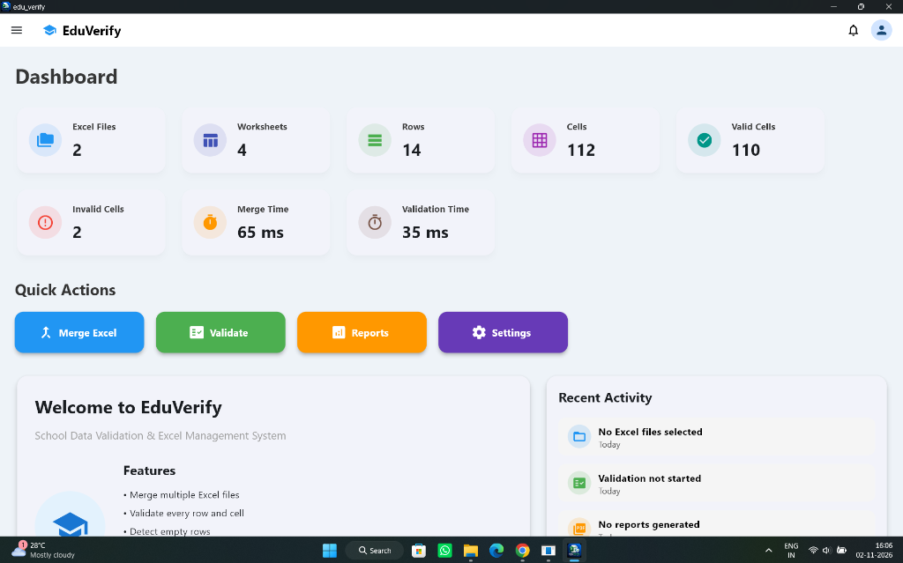
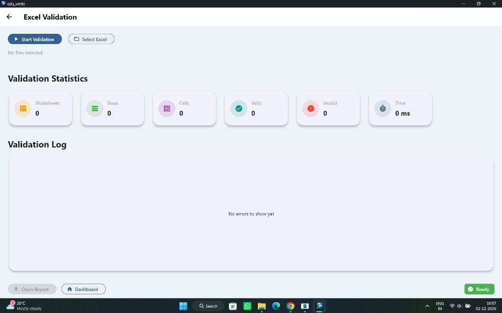
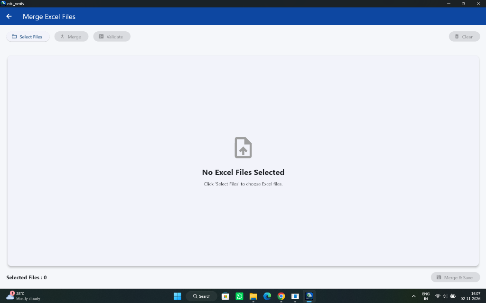
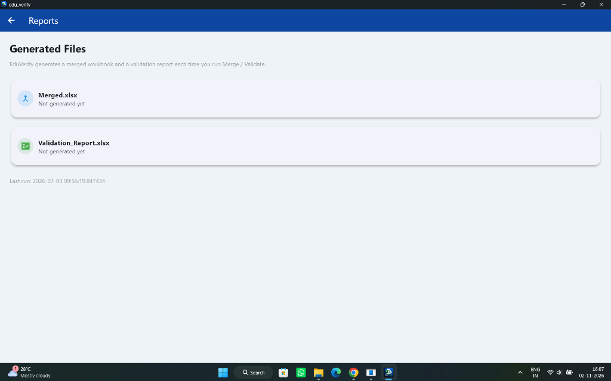
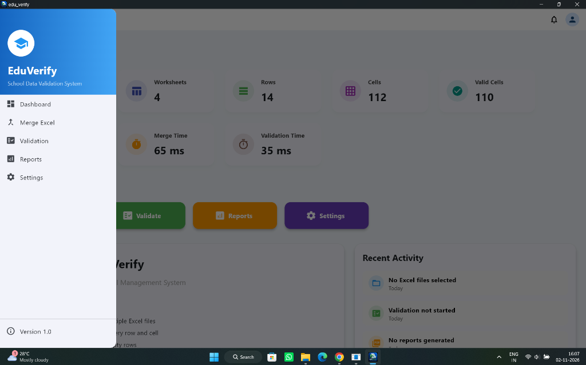

EduVerify School Data Validation & Excel Management System
A high-velocity Windows desktop software engineered for educational institutions, examination cells, and administrative registries. Ingests, inspects, and merges multi-sheet workbooks in milliseconds—automatically catching empty rows, blank columns, malformed cell values, and formula defects before institutional database submission.

Live Institutional Dashboard
4 Worksheets • 14 Rows • 112 Cells • 110 Valid • 2 Invalid
Desktop Interface Breakdown
Designed for Institutional Efficiency
Inspect the real Windows application views built to handle chaotic multi-department student datasets with zero friction.

Granular Cell-Level Audit
Live statistics break down Worksheets, Rows, Cells, Valid vs. Invalid counts with real-time execution timer (0 ms initial, sub-50ms execution). Includes an interactive Validation Log console catching empty rows and bad formulas.

Streamlined Concatenation
Batch selector supporting simultaneous ingestion of dozens of teacher marksheets or department rosters. Standardizes schemas, normalizes headers, and merges files in 65 ms.

Dual Output Generation
Generates two synchronized output workbooks on every run: Merged.xlsx (clean consolidated institutional dataset) and Validation_Report.xlsx (exact discrepancy coordinates and error taxonomy).

Intuitive Institutional Operator Interface
The left navigation drawer provides quick switches across Dashboard, Merge Excel, Validation, Reports, and Settings, keeping school staff focused without cognitive clutter.
Color-coded 1-click Quick Action buttons allow operators to launch Batch Merges, start deep Validations, export Audit Reports, or fine-tune delimiter schemas.
The Problem We Solved
The Silent Spreadsheets Crisis in Educational Operations
Educational institutions receive hundreds of spreadsheets every semester from different teachers, departments, and regional centers. Human data entry inevitably introduces silent corruptions that crash database imports or misalign student records.
Ghost Empty Rows
Blank rows containing invisible whitespace or stray formatting that cause SQL bulk copy migrations to abort prematurely.
Missing & Shifted Columns
Inconsistent header labels (e.g. "Roll No" vs "Reg Number") that misalign relational student keys across multiple class sheets.
Type Mismatches & Errors
Text entered inside numeric fee balances, malformed date syntax, and unresolved Excel calculation errors (#REF!, #VALUE!).
Fragmented Workbook Silos
Administrators manually copy-pasting 30 individual departmental files into one master sheet, introducing human transcription defects.
Technical Architecture
The EduVerify Core Engine Pipeline
How EduVerify processes, validates, and consolidates complex workbooks in under 100 milliseconds without touching external servers.
Multi-Workbook Ingestion
Drag & drop or select arbitrary quantities of .xlsx or .xls files. Reads headers and dimensions in memory via fast binary streams.
Zero-Tolerance Cell Audit
Traverses every cell coordinate. Catches empty rows, blank columns, formula errors, string discrepancies, and negative balances in 35 ms.
In-Memory Normalization
Aligns column indices across disparate sheets. Strips ghost blank rows and normalizes data types without mutating source files.
Dual Output Compilation
Instantly generates clean Merged.xlsx for database upload and comprehensive Validation_Report.xlsx detailing exact coordinates.
System Specifications
Enterprise Engineering Blueprint
EduVerify was engineered to run seamlessly on standard Windows administrative computers without requiring complex database engines, cloud subscriptions, or technical IT setup.
Student records, examination grades, and institutional identities remain strictly on the local machine. Zero internet calls, zero telemetry, and zero third-party exposure.
| SPECIFICATION | ENGINEERING IMPLEMENTATION |
|---|---|
| Target Platform | Windows 10, Windows 11 (64-bit Native Desktop Utility) |
| Input Formats | Microsoft Excel (.xlsx, .xls), CSV (.csv), Tab-Delimited |
| Validation Speed | 35 milliseconds (benchmarked on 112 cells / 14 rows) |
| Merge Speed | 65 milliseconds (multi-worksheet concatenation) |
| Memory Architecture | Zero-thrash streaming buffer (<50 MB RAM operational footprint) |
| Anomalies Detected | Empty rows, missing columns, formula errors, malformed regex types |
| Output Products | Merged.xlsx (Consolidated) + Validation_Report.xlsx (Audit) |
| Network Footprint | 100% Offline Air-Gapped (Zero telemetry, zero cloud calls) |
| Current Version | Version 1.0 Production Release |
Need Custom Data Automation or Desktop Software for Your Organization?
Whether you need offline institutional tools, automated Excel & PDF processors, or enterprise management software, ANVION engineers tailor-made desktop and cloud solutions.
Explore Other Featured Projects
HOMELUXE Luxury Real Estate
Curated high-value property portal with AI valuations and verified RERA advisory.
Mobile Application • FlutterTask Planner & Momentum Engine
Offline-first productivity engine with Riverpod state and indexed SQLite B-Tree storage.
Mobile Billing • Vector PDFSmart Invoice Builder
Zero-latency field invoicing app generating print-ready A4 PDFs with 1-tap WhatsApp sharing.